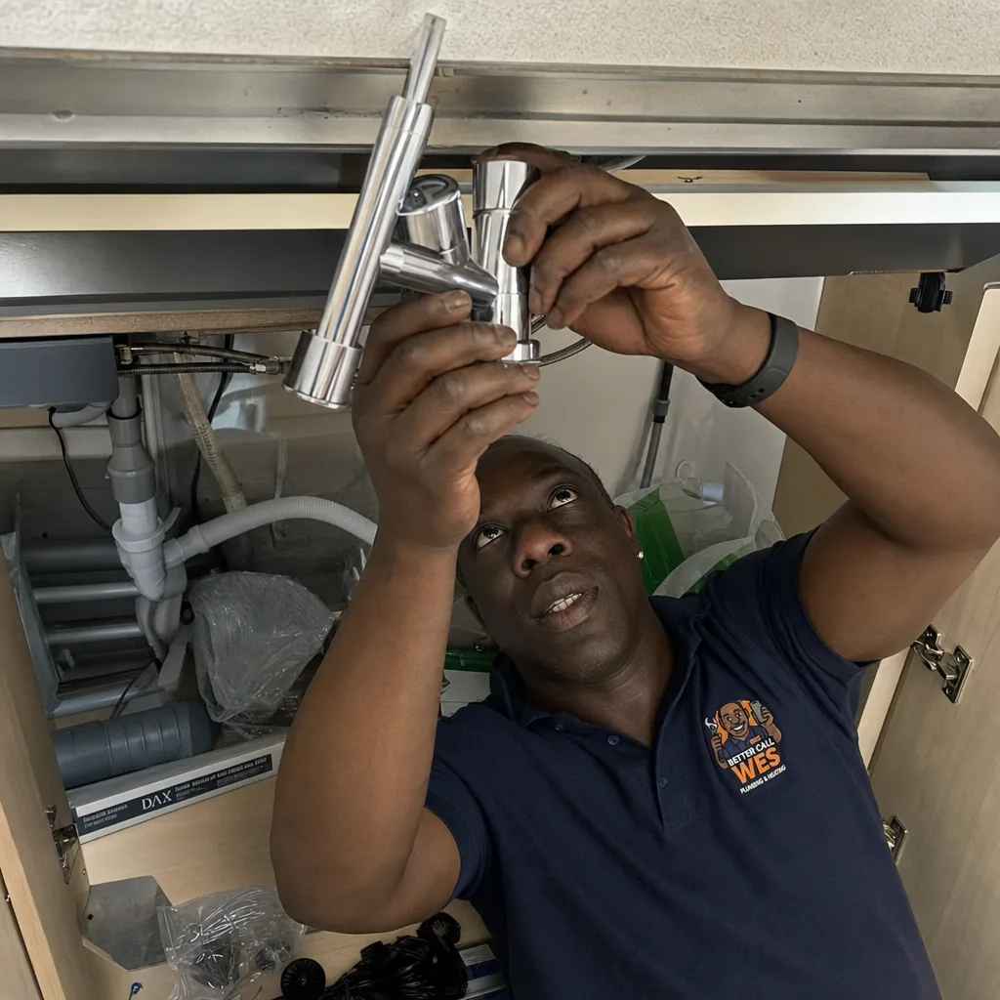

Tap Replacement & Repairs
New tap fitting, dripping tap repairs, and washer replacements. Kitchen, bathroom, and utility room – I fix and fit all types of taps.
New tap fitting, dripping tap repairs, and washer replacements. Kitchen, bathroom, and utility room – I fix and fit all types of taps.
That annoying drip is wasting water and money. Usually a quick washer or cartridge replacement.
New kitchen mixer tap? I'll remove the old one and fit your new tap cleanly and securely.
Updating your bathroom basin taps? Whether mono mixer or pillar taps, I'll fit them perfectly.
Deck-mounted or wall-mounted bath taps fitted. Includes removing old taps and checking for leaks.
Modern mixer taps for kitchen or bathroom. I'll check compatibility and fit it properly.
Add isolator valves under sinks/basins so you can turn water off locally for future maintenance.
You're welcome to buy your own tap – there's no fitting premium. Many customers like to choose their own style from B&Q, Screwfix, or online retailers.
Alternatively, I can source and supply quality taps at competitive prices. Just let me know what style you're after when you book.
Check your tap holes before buying! Kitchen sinks and basins have different hole sizes (usually 28mm or 35mm). Send me a photo if unsure.

Usually a worn washer or O-ring (traditional taps) or a faulty ceramic cartridge (modern mixers). These are quick, inexpensive fixes.
In most cases, yes. Make sure it's compatible with your sink/basin (check hole size and type). If unsure, send me a photo before you buy.
A straightforward tap swap takes 30-45 minutes. If access is difficult (e.g., cramped under-sink space) it may take a bit longer.
Book online or send photos via WhatsApp for a quick quote.

Send me a photo on WhatsApp, I’ll come back with a fair quote.
WhatsApp 07700 155 655£100 to £150 for a like-for-like swap including labour. Adding new pipework or fitting a kitchen mixer where there's only single taps is more.
Yes. They need a power supply under the sink and a dedicated cold feed. I supply and fit, or fit if you've bought one.
Yes. 3-in-1 and 4-in-1 filter taps are straightforward to install if there's space under the sink for the filter housing.
Modern preference is monobloc for a cleaner look and one hot-cold control. Traditional kitchens sometimes look better with two-pillar taps.
Click your area for an idea of what neighbours have asked me to fix.